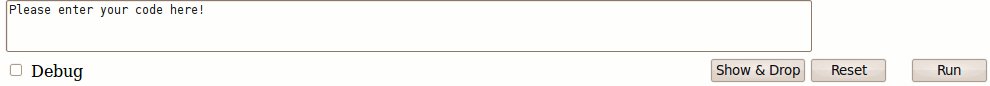

چکیده
در این راهنما مفسر ساخته شده برای اجرای دستورهای جبر رابطهای توضیح داده میشود. این مفسر به سادگی روی هر مرورگر متداولی اجرا میشود زیرا برای پیادهسازی آن xhtml و javascrtipt به کار گرفته شده است. سادگی کار با این نرمافزار و همچنین نیاز نداشتن به هیچ نصب و یا برنامههای پیچیده از ویژگیهای خوب این مفسر تازه میباشد.
مقدمه
امروزه یکی از نیازهای مهم آموزشی فراهم کردن ابزارهای مناسب همراه با نمایش بصری شایسته برای تدریس درسها است. رشتهٔ کامپیوتر یکی از رشتههایی است که زمینههای کاربردی گوناگونی دارد و دانشجویان این رشته نیز به کاربردها بسیار علاقهمند هستند. متأسفانه همزمان این دانشجویان چندان علاقهای به مباحث تئوری ندارند و بنابراین از نظر پایهٔ علمی چندان ارتقا نمییابند. این در حالی است که یادگیری مفاهیم پایهٔ تئوری نیازی بنیادی برای آماده شدن برای کاربردهای عملی آنها است. برخی از درسها گرچه به روشنی کاربرد عملی فراوانی دارند ولی پیش از آن باید مفاهیم تئوری گوناگونی را برای آن آموخت که در عمل بسیار سودمند هستند. درس پایگاه دادهها در رشتهٔ کامپیوتر یکی از این دسته درسها است. یکی از بخشهای این درس که پایهٔ بسیار از سامانههای پایگاه دادههای کنونی است مدل رابطهای است. با فراگیری مفهوم مدل رابطهای دانشجو به خوبی میتواند کاربرد و سودمندی آن را در آیندهٔ کاری ببیند. برای فراگیری مدل رابطهای زبان جبر رابطهای به عنوان یک زبان رابطهای محض در این درس توضیح داده میشود. این زبان به صورت کاربردی به کارگرفته نمیشود ولی آمادگی خوبی را برای دانشجو فراهم میکند تا بتواند بهتر زبان SQL را فرابگیرد. از سوی دیگر ابزارهای اجرایی مناسبی فراهم نیست که به کمک آن بتوان به سادگی نمونه دستورهای (عبارتهای) این زبان را اجرا نمود و به سادگی نتیجهها را به صورت بصری نشان داد. ابزارهایی که تا کنون فراهم شده است از مشکلهای گوناگونی رنج میبرند. نیاز به نرم افزارهای دیگر برای نصب، سختی کار با آنها و دشواری اجرای دستورهای ساده در آنها و نیاز به آماده کردن محیط برای اجرا از جمله مشکلهایی هستند که ابزارهای کنونی اجرا کنندهٔ این زبان دارند. بنابراین نیاز به یک مفسر توانمند و ساده و همزمان بدون نیاز به نصب احساس میشد. ابزار کنونی ساخته شده ویژگیهای یاد شده را دارد که در این راهنما دربارهٔ چگونگی به کارگیری آن توضیح داده میشود.
زبان جبر رابطهای
زبان جبر رابطهای زبانی است که پروفسور کاد آن را برای به کارگیری در مدل رابطهای پیشنهادیاش معرفی کرد. مدل رابطهای در آغاز به صورت یک مدل تئوری و بدون کاربردی پنداشته میشد. C.J.Date به نظر نخستین کسی بود که با پیاده سازی عملی مدل رابطهای و زبانی همانند زبان جبر رابطهای، سودمندی و کاربردی بودن مدل رابطهای را به همگان ثابت کرد. از آن پس مدل رابطهای به صورت گستردهای در سامانههای مدیریت پایگاه دادهٔ کنونی به کار گرفته شد. زبان SQL به طور کامل جایگزین زبانهای محض رابطهای شد و به صورت استانداردی برای کار با پایگاه دادهها درآمده است. امروزه زبان جبر رابطهای به عنوان پدر زبان SQL، به صورت کاربردی به کار گرفته نمیشود ولی به صورت گستردهای برای توضیح درس مقدماتی پایگاه داده به کار برده میشود. تقریباً در همهٔ کتابهای مرجعِ کنونی این درس این زبان معرفی و توضیح داده میشود و کوشیده میشود با نمونههای گوناگون این زبان توضیح داده شود. زبان جبر رابطهای به دو صورت معرفی شده است:
-
همانند این همهٔ زبانهای متداول به کمک کاراکترهای معمولی نوشته شود. این روش در کتاب مرجع پایگاه داده از C.J.Date به کار گرفته شده است و به صورت گستردهای در بسیاری از کتابهای دیگر نیز به کار گرفته شده است.
-
به صورت نمادگذاری ریاضی که در آن از نمادهای ریاضی (یونانی) برای نوشتن دستورها کمک گرفته میشود. این نمادگذاری با وجود شکل زیباتری که دارد ولی خواندن آن دشوارتر است و چون شکل تو در تو نیز دارد میتواند برای دستورهای بزرگ به شکل نه چندان خوشایندی تبدیل شود. در ضمن نسخههای گوناگونی از این روش نوشتن و قاعدههای به کار گرفته شده در آن دیده میشود.
به دلیل این که C.J.Date نخستین روش را در کتابش به کاربرده است و همچنین برای آن استاندارد کاملی را آماده کرده است بنابراین برای طراحی این ابزار زبان جبر رابطهای با این نمادگذاری پیاده سازی شده است. برای آشنایی هر چه بیشتر با چگونگی نوشتن دستورهای این زبان به کتاب ایشان An Introduction to Database Systems مراجعه نمایید. لطفا پیش از ادامهٔ خواندن این راهنما فصل مربوط به زبان جبر رابطهای را بازخوانی نمایید تا آمادگی خوبی برای کار کردن با این زبان داشته باشید و همچنین به خوبی به سودمندی ابزار ساخته شده پی ببرید.
نصب
این ابزار نیاز به نصب ندارد و فقط کافی است که در یکی از مرورگرهای متداول پروندهٔ index.html را باز کنید. این پرونده درون پوشهٔ اصلی گذاشته شده است. یا اینکه بخش
اجرای ابزار
را اجرا نمایید و این ابزار را به کار ببرید.
بخش ورود دستورها

در این بخش درون کادر دستور جبر رابطهای به جای عبارت Please enter your code here! گذاشته میشود. پس از وارد کردن دستور درون این کادر باید دکمهٔ Run در پایین و سمت چپ این بخش زده شود تا دستور اجرا شود. دکمهٔReset برای برگرداندن به حالت نخست است. دکمهٔ Show & Drop برای نشان دادن رابطههایی است که به صورت پویا به کمک دستورها ساخته شده است. چنین رابطههایی که در پایگاه داده نیستند و به صورت پویا ساخته شدهاند در بخش پایینی با همین نام نشان داده میشوند.
اگر کادر علامتِ Debug (پایین سمت راست) علامت زده شود نتیجههای میانی اجرا نشان داده میشود.
بخش پایینی ابزار Show & Drop برای نشان دادن رابطههایی که در طول اجرای دستورهای کنونی ساخته شده است به کار برده میشود. به کمکِ دکمههایی که در پایین بخش گذاشته شده است میتوان دیگر رابطهها را نیز نمایش داد یا اینکه رابطهای را حذف نمود.
چند دستور نمونه
تعدادی دستور نمونه درونِ پروندهٔ
examples.txt
در پوشهٔ اصلی ابزار گذاشته شده است. با گذاشتن هر یک از این نمونهها و اجرای آنها به خوبی میتوانید به تواناییهای این ابزار و سادگی کار آن پی ببرید. دقت شود که در پایان هر دستور باید « ; » گذاشته شود. برای اینکه بتوان چندین دستور را یکجا درون کادر ورود دستور گذاشت این علامت برای نشان دادن پایان هر دستور در نظر گرفته شده است.
همهٔ حقوق این نوشته از آنِ احمد یوسفان است.